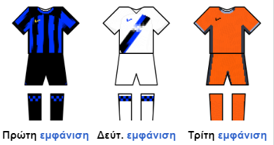

Η ΦΚ Ιντερνατσιονάλε Μιλάνο ή απλούστερα Ίντερ, είναι ποδοσφαιρικός σύλλογος της Ιταλίας με έδρα το Μιλάνο, στη Λομβαρδία. Η ομάδα μετέχει ανελλιπώς στην κορυφαία βαθμίδα του ιταλικού συστήματος ποδοσφαιρικών πρωταθλημάτων από την πρώτη της εμφάνιση το 1909, με αποτέλεσμα να είναι η μόνη ιταλική ποδοσφαιρική ομάδα που δεν έχει υποβιβαστεί από την κορυφαία βαθμίδα του ιταλικού πρωταθλήματος (Σέριε Α).
Ιδρύθηκε το 1908, μετά από μια εσωτερική διάσπαση του Milan Cricket and Football Club (νυν Μίλαν). Η Ίντερ κέρδισε το πρώτο της πρωτάθλημα το 1910. Από τη σύστασή του, ο σύλλογος έχει κερδίσει 36 εγχώρια τρόπαια τα οποία μεταφράζονται σε 19 Πρωταθλήματα, 9 Κύπελλα και 8 Σούπερ Καπ Ιταλίας. Από το 2006 έως το 2010, η ομάδα κέρδισε πέντε συνεχόμενα πρωταθλήματα, ισοφαρίζοντας το ρεκόρ της εποχής εκείνης. Έχει κερδίσει το Κύπελλο Πρωταθλητριών/ΟΥΕΦΑ Τσάμπιονς Λιγκ τρεις φορές: δύο συνεχόμενες φορές το 1964 και το 1965, και μια ακόμα το 2010. Το τελευταίο αποτέλεσε μια πρωτοφανή ιταλική επίτευξη, το "τρεμπλ", που περιλάμβανε το Κύπελλο Ιταλίας και το Σκουντέτο στην ίδια χρονιά. Η ομάδα έχει κερδίσει επίσης τρία ΟΥΕΦΑ Γιουρόπα Λιγκ, δύο Διηπειρωτικά Κύπελλα και ένα Παγκόσμιο Κύπελλο Συλλόγων.
